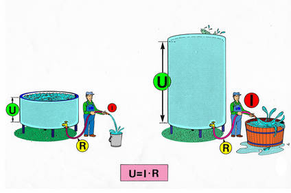
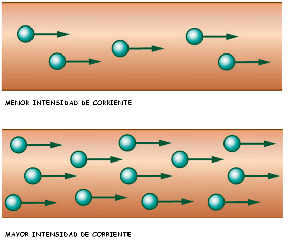

Magnitudes eléctricas
Trabajamos con tres magnitudes eléctricas: Voltaje, intensidad y resistencia.
VOLTAJE O TENSIÓN ELÉCTRICA (V).
El voltaje o tensión eléctrica es la energía por unidad de carga que hacen que estas circulen por el circuito. Se mide en voltios (v).
La tensión entre dos puntos de un circuito es la diferencia de energía eléctrica para la unidad de carga entre dicho puntos. La carga siempre circula desde los puntos donde la energía es más alta hasta los puntos en los que es más baja.
Podríamos decir que es la fuerza con la que empujamos a los electrones para que se pongan en movimiento y generen energía eléctrica.
Si disponemos de dos depósitos de agua situados a diferente altura, el agua puede circular por una tubería desde el más alto hacia el más bajo. En los polos de una pila pasa algo parecido, uno tiene más energía que otro y pone los electrones en movimiento. El voltaje mide esa energía por unidad de carga.

La tensión eléctrica se mide con el voltímetro, aparato que se conecta en paralelo con el componente o generador cuya tensión se quiere medir. La resistencia interna de este aparato es muy elevada, de manera que a través de casi no circula corriente.
INTENSIDAD (I).
La intensidad es la cantidad de carga (de corriente electrica) que pasa por el conductor en un segundo. Se mide en amperios (A).
Podríamos decir, que es la cantidad de electrones que pasan por el conductor en un segundo.

Para medir la intensidad de corriente, se emplea el amperímetro, aparato que se conecta en serie con el receptor o receptores cuya intensidad queremos medir. La resistencia interna de este aparato es tan pequeña que apenas afecta a la corriente del circuito.
RESISTENCIA (R).
La resistencia mide la oposición que presentan los conductores al paso de la corriente. Se mide en ohmios (Ω).
El filamento de un brasero eléctrico opone más resistencia al paso de los electrones, digamos que estos se "agolpan" para pasar por él, elevando la temperatura del conductor.
El aparato de medida es el ohmetro.
Comprobamos lo aprendido. Completa
Mira la tabla sieguiente donde tenemos que relacionar las diferentes magnitudes eléctricas, sus unidades de medida y su símbolo.
A continuación tienes una animación que compara el circuito eléctrico con un circuito hidráulico.
Si no aparece tienes que desactivar la navegación seguro del navegador de internet (quitar https). En el caso de que siga sin aparecer pulsa AQUI.
Obra publicada con Licencia Creative Commons Reconocimiento Sin obra derivada 4.0